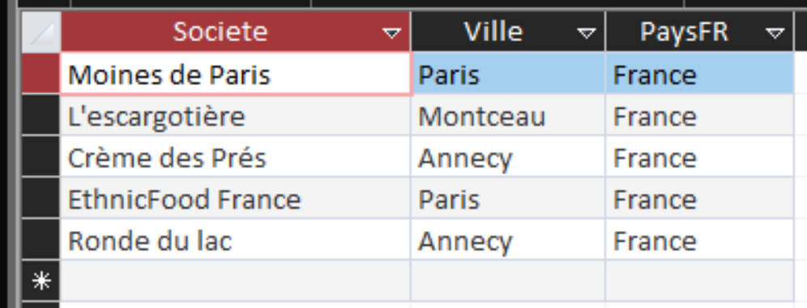

INDICATEUR 01
Cette requête permet de mieux connaître les fournisseurs français de Kdou et de voir dans quelles villes ils sont installés.
SELECT Fournisseur. Societe,
Fournisseur.Ville,
Pays.PaysFR
FROM Pays
INNER JOIN Fournisseur
ON Pays.NoPays = Fournisseur.NoPays
WHERE Pays.PaysFR = "France";
